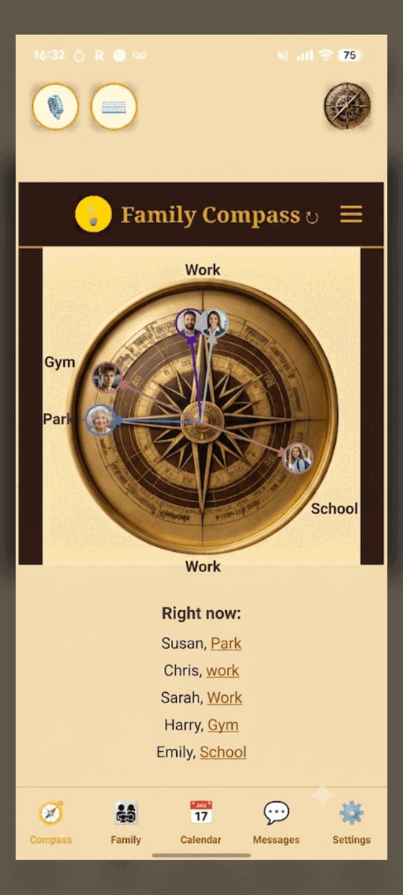

Family Location & Privacy
A Private Alternative to Life360 for Families
Family location sharing without the data selling or the monthly fee — one private, encrypted app for everyone you care about.
Why do families look for a Life360 alternative?
Usually for three reasons: privacy, data practices, and cost. Life360 is a popular, capable family-location app, but some families want stronger privacy guarantees, are uneasy that location apps have historically sold or shared location data in the industry, and are tired of paying a monthly subscription. Those families go looking for something more private and simpler.
None of this means Life360 is a bad app. It does what it promises, and millions of families rely on it every day.
The question many families ask is narrower: can I share location without my family's whereabouts becoming a product, and without another monthly bill?

What makes FamilyCompass private?
Three things. Location and messages are end-to-end encrypted, so only the family members you choose can see them. AI Pieces does not sell or share your location data with advertisers or brokers. And access is family-only — there is no central party browsing where your family is. Privacy isn't a setting you switch on; it's how the app is built.
End-to-end encryption means the data is locked on your devices. Even we can't read your messages or see where your family is.
And because we don't sell data, there's no quiet incentive working against you. The people the app answers to are the families using it.
Does it do more than show a dot on a map?
Yes. Location is just the start. FamilyCompass also gives you a shared family calendar, end-to-end encrypted messaging, and care coordination tools like shared appointment and medication records. The idea is one private app for the whole family — so you're not running a location app, a chat app, and a calendar app separately, each holding a slice of your family's life.
A map dot tells you where someone is. It doesn't help you plan the school run, agree who's collecting Grandad, or keep the family conversation in one place.
FamilyCompass puts location alongside the rest of family coordination, so the same private app covers far more of daily life. There's more on the family coordination app page.

What about cost?
Here's the honest answer: FamilyCompass is in beta, and beta testers use it at no charge right now. Final pricing hasn't been set, so we won't quote a price or promise a permanent free tier we haven't decided on. What we will commit to is being clear about pricing before any paid plan starts — no surprise charges, and no obligation to continue.
We'd rather say "not decided yet" than invent a number. When pricing is set, beta families will hear it first and directly.
The one thing we can promise now: the app won't be funded by selling your family's location data. That's the trade we're deliberately not making.
What are the trade-offs?
Honesty matters here. FamilyCompass is newer and smaller than Life360, it's still in beta with some features being refined, and it isn't listed on the public app stores yet — during beta we set testers up directly. If you need a long-established app with a huge user base today, Life360 may suit you better. If privacy and one unified app matter most, we're worth a look.
- In beta — expect a few rough edges and features still landing.
- No App Store or Google Play listing yet; beta access is handled directly.
- Smaller and younger than Life360, with a smaller community.
- Final pricing isn't set, so we can't quote one yet.
We'd rather you choose with eyes open. If a switch isn't right for you yet, that's a fair call — and you'll know exactly why.
FamilyCompass vs typical family-location apps
A fair, plain comparison — strengths and limits on both sides, so you can decide what fits your family.
FamilyCompass
Private, encrypted, all-in-one — in beta
Strengths
- End-to-end encrypted location and messaging
- No selling of family location data
- Location plus calendar, chat and care coordination in one app
- Built for the whole family, including elderly parents
Limits
- In beta; some features still being refined
- No public app-store listing yet
- Smaller and newer, with a smaller community
- Pricing not finalised
Typical family-location apps
Established, location-focused (e.g. Life360-style)
Strengths
- Mature, widely used, available in the app stores today
- Large feature sets and big communities
- Driving reports and other location extras
Limits
- Privacy and data practices vary; some have sold location data historically
- Often subscription-based with recurring fees
- Mainly location-focused, so families still run other apps alongside
Try a more private way to stay connected
FamilyCompass is in beta and onboarding families now — encrypted family location, with no data selling. No pressure, and you can leave any time.
Join the FamilyCompass betaFrequently Asked Questions
Is FamilyCompass really encrypted?
Yes. FamilyCompass uses end-to-end encryption, so your family's location and messages are readable only by the people you share with. AI Pieces cannot see your location or read your messages, because the data is encrypted on your devices and not in a form we can access. Encryption is the foundation of the app, not an extra.
Does it sell my family's location data?
No. AI Pieces does not sell or share your family's location data with advertisers, data brokers, or anyone else. That is a deliberate choice: our plan is to be funded by the people who use the app, not by selling what the app knows about your family. Your data stays inside your family.
Is there a free version?
FamilyCompass is in beta, and beta testers currently use it at no charge. Final pricing has not been set, so we are not promising a specific free tier or price yet. If you join the beta, you can use it now and we will be clear about pricing before any paid plan begins.
Does it work on iPhone and Android?
FamilyCompass is built for both iPhone and Android. During beta, access is handled directly with testers rather than through the public app stores, so there is no App Store or Google Play listing yet. Joining the beta is how you get it on your phone for now.
Can I track an elderly parent too?
Yes, with their consent. FamilyCompass is built for the whole family, so an elderly parent can be part of the same app as children and partners, sharing location and a calendar. It is a coordination tool, not a medical device, and it does not monitor health or replace professional care.
Is it available now?
FamilyCompass is in beta and actively onboarding families across several countries. It is usable today, with some features still being refined. You can join the beta now to try it on your own family and help shape it before the public launch.